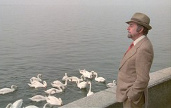
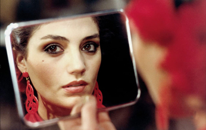
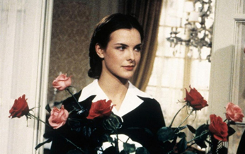
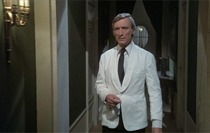
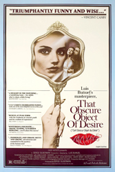
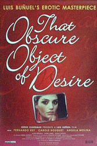
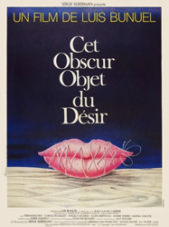
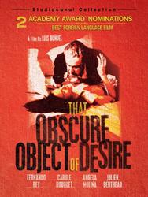
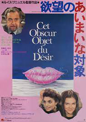

Fernando Rey - Mathieu
Ángela Molina - Conchita


Carole Bouquet - Conchita
André Weber - Martin

Conductor
Porter
Ballerina
Concierge
Deporting Policeman
Psychologist
El Morenito
A dysfunctional and sometimes violent romance happens between Mathieu (Fernando Rey), a middle-aged, wealthy Frenchman, and a young, impoverished, and beautiful flamenco dancer from Seville, Conchita, played by Carole Bouquet and Ángela Molina. The two actresses each appear unpredictably in separate scenes, and differ not only physically, but temperamentally as well.
Most of the film is a flashback recalled by Mathieu. The movie opens with Mathieu travelling by train from Seville to Paris. He is trying to distance himself from his young girlfriend Conchita. As Mathieu's train is ready to depart, he finds that a bruised and bandaged Conchita is pursuing him. From the train he pours a bucket of water over her head. He believes this will deter her, but she sneaks aboard.
Mathieu's fellow compartment passengers witness his rude act. These include a mother and her young daughter, a judge who is coincidentally a friend of Mathieu's cousin, and a psychologist who is a dwarf. They inquire about his motivation for such an act, and he then explains the history of his tumultuous relationship with Conchita. The story is set against a backdrop of terrorist bombings and shootings by left-wing groups.
Conchita, who claims to be 18 but looks older, has vowed to remain a virgin until marriage. She tantalizes Mathieu with sexual promises, but never allows him to satisfy his sexual desire. At one point she goes to bed with him wearing a tightly laced canvas corset, which he cannot untie, making it impossible to have sexual intercourse. Conchita's antics cause the couple to break up and reunite repeatedly, each time frustrating and confusing Mathieu.
Eventually, Mathieu finds Conchita dancing nude for tourists in a Seville nightclub. At first he becomes enraged. Later, however, he forgives her and buys her a house. In a climactic scene, soon after moving into the house, Conchita refuses to let Mathieu in at the gate, tells him that she hates him, and that kissing and touching him make her sick. Then, to prove her independence, she appears to initiate sexual intercourse with a young man in plain view of Mathieu, although he walks away without witnessing the act. Later that night he is held up at gunpoint as his car is hijacked.
After this, Conchita attempts to reconcile with Mathieu, insisting that the sex was fake and that her "lover" is in reality a homosexual friend. However, during her explanation, Mathieu beats her up (provoking her to say "Now I'm sure you love me"), which causes her bandaged and bruised state seen earlier in the film.
Just as the fellow train passengers seem satisfied with this story, Conchita reappears from hiding and dumps a bucket of water on Mathieu. However, the couple apparently reconcile yet again when the train reaches its destination. After leaving the train, they walk arm in arm, enjoying the streets of Madrid.
Later in a mall in Paris, loudspeakers announce that a strange alliance of extremist groups intends to sow chaos and confusion in society through terrorist attacks. The announcement adds that several right-wing groups plan to counter-attack. As the couple continues their walk, they pass a seamstress in a shop window mending a bloody nightgown. They begin arguing just as a bomb explodes, apparently killing them.
Based on the 1898 novel The Woman and the Puppet by Pierre Louÿs, the film was Buñuel's final directorial effort before his death in July 1983. Set in Spain and France against the backdrop of a terrorist insurgency, the film conveys the story told through a series of flashbacks by an aging Frenchman, Mathieu (Fernando Rey), who recounts falling in love with a beautiful young Spanish woman, Conchita (played interchangeably by two actresses, Carole Bouquet and Ángela Molina), who repeatedly frustrates his romantic and sexual desires.
In his autobiography, My Last Sigh (1983), Buñuel explained the decision to use two actresses to play Conchita: "In 1977, in Madrid, when I was in despair after a tempestuous argument with an actress who'd brought the shooting of That Obscure Object of Desire to a halt, the producer, Serge Silberman, decided to abandon the film altogether. The considerable financial loss was depressing us both until one evening, when we were drowning our sorrows in a bar, I suddenly had the idea (after two dry martinis) of using two actresses in the same role, a tactic that had never been tried before. Although I made the suggestion as a joke, Silberman loved it, and the film was saved."
The book does not identify the actress who had caused the "tempestuous argument," though Buñuel makes it clear that it was neither Carole Bouquet nor Ángela Molina. In Luis Buñuel: The Complete Films (2005), editors Bill Krohn and Paul Duncan identify the actress as Maria Schneider.
Spanish actor Fernando Rey frequently worked with Buñuel in his later years. He plays Mathieu, but his voice is dubbed by the French actor Michel Piccoli, another frequent Buñuel collaborator.
The film was not financially successful, but it became a critical favourite, earning Best Foreign Language Film nominations at both the Golden Globe Awards and the Academy Awards (where it was also nominated for Best Writing, Screenplay based on Material from Another Medium) but failing to win at either. In the British Film Institute's 2012 Sight & Sound poll, three critics and two directors ranked it one of the ten greatest films ever made.




